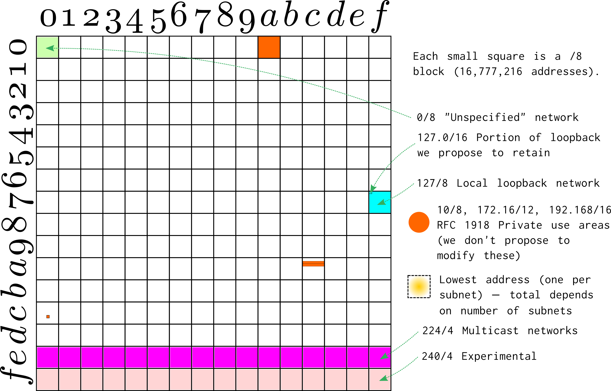

We're trying to alleviate the acute shortage of Internet Protocol version 4 (IPv4) addresses by bringing some unused addresses into use.
Around 1981, the Internet's original protocol, IPv4, was designed to have up to 232, or about 4.2 billion, unique addresses. At that time, this number seemed absurdly large; today, it seems absurdly small.
In the original design of the Internet, every device ought to have at least one completely unique address. That poses a limit of 4.2 billion Internet-connected devices. The real limit was somewhat less because of inefficient address allocations and hundreds of millions of reserved addresses (that were not available for use by any device). Since about 1994, multiple devices have been able to share a single Internet addresses, which increases the limits to the total number of devices that can connect, but introduces new limitations, especially on the use of those devices as servers.
Depending on how we measure, we ran out of new completely unused IP addresses sometime between 2012 and 2020. (There are many different milestones that can be taken as marking the "definitive" moment of exhaustion, so we may never agree on a more specific date.) The Internet community adopted a plan around 1999 to switch the Internet to a new technology, IPv6, which has 2128 addresses. This transition has been slow and uneven; the adoption of IPv6 is still only about 30% worldwide, much less than originally predicted. While its adoption is still growing, researchers question whether it will ever completely replace IPv4.
There is still a very considerable demand for IPv4 addresses, often though not exclusively from web hosting and cloud companies. This demand has led to efforts to find and reclaim IPv4 addresses that were allocated but are not in use. Among many examples, the Massachusetts Institute of Technology sold half of its allocation of 16.7 million IPv4 addresses ("18/8") to Amazon and possibly other hosting companies in 2017, since MIT wasn't using anywhere near this many addresses on its campus networks.
While unused or underused previously-allocated IPv4 addresses continue to be found and resold, we're broadening the search for these addresses by proposing making active use of other categories of addresses, including long-ago reserved addresses that have never been used for any purpose.
Unicast refers to the most common form of communication on the Internet, directly between a single device and another single device. Internet software and standards usually decide whether this form of communication is intended by examining the IP addresses in a packet. (Other possibilities include "broadcast", "multicast", and "loopback".) Almost all Internet communication is unicast because it takes place directly between a client and server, or between two peer devices.
This project is called IPv4 Unicast Extensions because it aims to allow many IPv4 addresses to be used for unicast communications that previously couldn't be used this way, because they were reserved or allocated for some other use. We will do this by reducing special cases in Internet standards and software.
Lots of networks still need IPv4 addresses—the most conspicuous examples are cloud and hosting providers, which largely need these addresses in order to provide services to IPv4 clients. IPv4 addresses are a significant portion of the costs of hosting services. If they intend to serve the general public worldwide, most of these services cannot hope to go IPv6-only today, as that would cut out accessible to a huge fraction of their users. (Some hosting providers offer "IPv6-only" hosting with shared IPv4 reverse proxies, where clients connecting over IPv4 connect to the proxy, which then makes its own IPv6 connection to the server. This works well for some sites, but also has its own trade-offs related to scalability and encryption.)
We can benefit the Internet community by addressing this demand which is limiting flexibility and raising costs of entry for all kinds of new Internet sites and services. Making new IPv4 addresses available will, for example, stop the costs of web hosting from increasing as quickly as they would otherwise. That helps more people and organizations be able to afford their own web sites or start Internet companies.
The active market for resale of IPv4 blocks, the high prices that purchasers have paid, and the way that purchased blocks were put into productive use all shows the unmet and growing demand and the value that could be provided by bringing these addresses into use.
The addresses we're looking at fall into five categories:
The zero network. This is the network that starts with 0, including addresses like "0.1.2.3". These addresses have never been allocated to any specific network, and were historically used to mean "this network" by some host autoconfiguration designs that ended up never getting used on the Internet.
The loopback network. This is the network that starts with 127, including the main loopback address 127.0.0.1, and over 16 million other addresses, all of which currently have the same meaning—"this machine".
The zeroth host on each subnet. This is the address that ends with zero, such as 103.224.182.0 (in 103.224.182.0/24). (On a subnet smaller than /24, the zero host's address doesn't end in ".0" but it still ends with zeroes in the binary representation. It is always equal to the subnet's network address; for instance, 93.184.216.32/28's zeroth host is 93.184.216.32, which ends with 0000 in binary.) Current standards call for not using this address to be used to refer to an individual device, mainly for compatibility with some no-longer used software from 1988.
Unused class D ("multicast") networks. These addresses are used to refer to groups of computers that should all receive the same data at once, a technology that was originally used in the 1990s for some kinds of broadcasts and video calls. It is used for a few other purposes today, but has not seen the significant growth that was originally anticipated; only hundreds of thousands to tens of millions of multicast addresses, out of the hundreds of millions reserved for these applications, are in use today. New multicast applications simply don't see the same level of demand as new unicast applications.
Reserved class E ("experimental") networks. These addresses were reserved for future use in 1981 and have never officially been used for any purpose, nor is there any other plan to use them for any purpose.

The zero network: 0.0.0.1-0.255.255.255 → 224-1=16,777,215 addresses.
The loopback network: 127.1.0.0-127.255.255.255 → Roughly 224-116-1=16,711,680 addresses.
The zeroth host: Typically one address per subnet Internetwide; the total depends on the number of subnets, which depends on the configuration of private networks, not just public address allocations, and cannot be publicly observed. (For example, whether 93.184.216.64 is in this category depends on whether the operator of 93.184.216.0/24 has internally subdivided it into /26 or smaller networks, which we can't tell from outside of that network.) Probably tens of millions of addresses.
Class D: Roughly 228-3×224=218,103,808 addresses.
Class E: 240.0.0.0-255.255.255.255 → 228=268,435,456 addresses.
Overall, these addresses could represent more than 10% of the IPv4 address space.
The challenges for each group of addresses mentioned above are a bit different. Existing software does often make assumptions that class E and the zero network's addresses won't be used at all (except for the special case of 0.0.0.0 by DHCP clients), that the 127 network will be used only for loopback, that the zeroth host on a subnet is an alternative second local broadcast address, or that class D addresses will be used only for identifying multicast groups. In some cases, the software will have to be modified to change these assumptions before devices will recognize them as legitimate ordinary ("unicast") addresses.
We've been doing tests to try to determine how widespread the assumptions are and which software is affected. In most cases, the software changes required would be very small, involving removing code rather than adding it. (For example, some systems have code that says something like "if IP address is larger than 240.0.0.0, then drop the packet". If that code were removed, these systems would be perfectly fine with those addresses!) The changes necessary for using the class E space and the zero network have already been made for Linux, Android, macOS, and iOS.
We're pursuing all of these elements in order to achieve the use of the addresses we're talking about:
Testing: We need to figure out how well existing hardware, software, and Internet infrastructure will cope with the use of these addresses for regular unicast purposes, both in order to identify changes that could be made for de-bogonization purposes (like Cloudflare did for 1.1.1.1), and in order to satisfy skeptics (and ourselves) that these changes won't be unreasonably disruptive. We should do this testing both in the lab—to see how individual devices react to being given or asked to access devices with previously unused address ranges—and, in a controlled manner, on the Internet.
Software fixes: We need to get various software systems updated to make fewer assumptions that might prevent use of these addresses.
ISP de-bogonization: We need to have ISPs that currently block the use of these addresses for global unicast change their behavior so that they will permit it.
Standards and policy: We need the Internet community to confirm how these addresses are allowed to be used, for example by amending old standards that say they should not be used this way.
The most consequential and far-reaching change to how we understand and interpret IP addresses was the adoption of CIDR (classless inter-domain routing) in 1993. In current terms, all routes had to be augmented with an explicit netmask instead of inferring the netmask automatically from the IP address. This affected both routers and the routing algorithms in host software. Our proposed changes call for smaller and simpler code changes than that, although of course the Internet is much bigger now. But ongoing remote software updates are also routine now, where they weren't in 1993.
Another noteworthy recent example is Cloudflare's implementation of a public nameserver on 1.1.1.1. While no Internet standard encouraged treating 1.1.1.1 specially, many networks had nonetheless done so, and Cloudflare had to engage in a process of identifying them and getting to change their behavior, with good results over time.
Cloudflare's efforts were a special case of a process known as de-bogonization, which has to be done when bringing any previously disused IP address range into use on the Internet. Some parts of the Internet will always have made assumptions about disused ranges (such as outright blocking them), and those assumptions will have to be reversed before the ranges enjoy the widest possible reachability. This process has been carried out repeatedly with great success, as when Cloudflare brought 1.1.1.0/24 into use, but also when various other IPv4 and IPv6 ranges were allocated and announced to the Internet for the first time.
De-bogonization doesn't necessarily have a defined end point. Cloudflare is still accepting reports today about networks that won't properly route 1.1.1.0/24, for example. These networks simply represent a smaller and smaller fraction of the Internet over time, perhaps asymptotically approaching zero.
While de-bogonization of addresses like 240/4 is a more difficult task (because the assumptions about its unroutability are present in more places), we believe it can make progress along similar lines—through practical testing and contacting responsible parties to get them to make changes to improve reachability.
Full connectivity and full interoperability are always important goals on the Internet. But neither is the case today; both are limiting approximations. For example, some IP networks can't successfully address each other directly some or all of the time (because of censorship, or router misconfigurations, or even business disputes between backbone ISPs).
Some older network software likewise can't interoperate with newer network software. We notice this phenomenon most in the web platform. A steady stream of changes has been made to the web platform since it was created in 1989, but web browsers have not always been updated promptly. There is a huge installed based of browsers that are several years behind current standards, a fact which causes very concrete interoperability problems of many different kinds. For example, web servers that followed industry recommendations to support only TLS 1.2 have broken compatibility with about 5% of older browsers and other clients. This pattern is repeated at the application layer, where web developers use HTML features that they know a few percent of visitors' software will not be able to understand.
We support efforts to increase compatibility and interoperability on the Internet. In fact, all of our de-bogonization efforts are aimed exactly at that. However, we hope that the Internet community will agree that legacy previously reserved address space can start to be used publicly before it is completely de-bogonized, just as other address space is used before all networks worldwide recognize it is legitimate.
There were previous attempts to bring the class E address space into use. An example is Fuller, Lear, and Meyer and Wilson, Michaelson, and Huston's drafts in 2008, which would have allowed using 240/4 as a source of public and private unicast blocks, respectively.
These attempts didn't progress at the IETF at the time. However, while these drafts were pending, the maintainers of several operating systems (Linux, SunOS, macOS, and iOS) all revised their software to allow unicast use of addresses from 240/4. These software changes persisted to the present day, and the Linux changes are inherited by Android and other systems based on Linux.
We hope that understanding of the seriousness of the IPv4 address space shortage and the legitimacy of trying to alleviate it, as well as more testing on the compatibility impacts of public use of each address range, will make the community more enthusiastic about this idea now.
The IPv6 transition helps alleviate some parts of the pain of running out of IPv4 addresses, but not all. The trouble is that, with only an IPv6 address, you can't access or be accessed by the majority of the Internet that's still IPv4-only without some kind of translation technology. The translation technology has its own costs and limitations, and requires one or more IPv4 addresses too.
Most hosting providers find that some of their hosting customers demand dedicated IPv4 addresses—in order to keep their hosted services reachable to clients that are still IPv4-only.
It's great when people adopt measures to conserve IPv4 addresses, and when they deploy IPv6, but neither of these things has made the demand for IPv4 addresses dry up. In fact, the demand has only continued to increase over time.
No.
We believe that maintaining IPv4 remains necessary and appropriate and should not be viewed as an attack on IPv6. The fear is that doing something to make IPv4 more usable will delay the IPv6 transition by reducing the pressure that supposedly animates it—such as the IPv4 address depletion pressure. We don't think this is sensible. What's more, decision-making about IPv6 adoption is highly localized, is mostly lagging on the access-network side, and includes many factors other than price.
Deliberately preventing people from alleviating the IPv4 address space shortage is not an IPv6 transition plan. It just makes IPv4 addresses more expensive. (If it were actually desirable to make IPv4 addresses more expensive, presumably the secondary market for these addresses should be actively suppressed and holders of legacy allocations should be discouraged or prohibited from transferring them in the hope that this would increase the pain for hosting customers, and thereby somehow cause them to substitute IPv6 for IPv4. We hope most people can agree that the existence of this market has been hugely beneficial for the Internet and that there's nothing wrong with trying to make more productive use of the IPv4 address space every way that we can.)
All of the major operating systems already have solid IPv6 support. That software work has been completed and deployed already. The likeliest reason that you may not have IPv6 connectivity on your desktop, mobile phone, or server is that your Internet service provider doesn't support it, not that your device software doesn't support it. There's no further change that needs to be made to these systems to make them IPv6-ready. Again, the IPv6 transition primarily lacks adoption from network operators, not from host software. So from the software side, we don't have to prioritize IPv6 compatibility fixes ahead of our unicast extensions work: in general, IPv6 has already been implemented many years ago in the software environments we're looking at.
This is not strictly true for home routers, because some of those are still IPv4-only. In that particular case, yes, we should encourage and help the router developers to add IPv6 support.
There are rumors that using, say, 0/8 or 240/4 addresses, or the zeroth host on a subnet, as ordinary unicast addresses could trigger serious software bugs and make computers crash. We've asked people who claimed this for details, but so far no one has ever provided an example, nor have we found any examples through our own testing. Devices we've seen that refuse to interoperate with these addresses simply ignore packets from them, which is typically the behavior that was required or recommended by Internet standards.
Though we have yet to find a single example, if there were any such devices, it would be good to find them and fix them as soon as possible—this behavior would represent a denial-of-service vulnerability. Other unrelated cases where an unexpected packet could cause a crash were, quite reasonably, treated as urgent bugs to be fixed.
Some proposals like Wilson, Michaelson, and Huston's draft from 2009 have advocated using reserved space such as 240/4 as private address space, like 192.168/16 from RFC 1918. There is considerable demand for private address space, and it has the advantage the changes needed to support it would only need to be made by organizations that actually want to use it. Some organizations have also started using various IPv4 blocks (including allocated but never-publicly-announced blocks like 22/8 and 25/8, and unallocated and reserved blocks like 240/4) as private address space on an unofficial basis without standards coordination with the rest of the Internet. These organizations might like the security of knowing that their practices are officially approved by the Internet community.
However, we think that global unicast is a better and more valuable use of the remaining reserved address space. In particular, organizations that control a private network well enough to set addressing policy for it are especially well-positioned to use IPv6 on that network, since they don't have to rely on any other networks' behavior to adopt IPv6 internally. IPv4 addresses, on the other hand, may still be required by networks that need to achieve interoperability with distant strangers, with whom they can't coordinate easily. There may be counterexamples to this calculus, particularly for private addresses meant for large carrier-grade NAT deployments, but intuitively "we're rolling out a new datacenter/organizational network and we need more IPv4 space to talk to ourselves" makes less sense than "we're rolling out a new public service and we need more IPv4 space to let users elsewhere in the world reach us".
In any case, we should start with the work necessary to support reserved address space as globally routable, since this work will also make this space usable for private allocations, while the converse is not necessarily true. The technical work is almost all the same, no matter what these addresses are allocated for. Millions of hosts, routers, and ancillary equipment like Internet-of-Things devices would need to enable unicast use of the address, and be able to route them, whether they are being used and routed inside a data center, inside a company, or in the whole world.
This will still preserve the option to subsequently "allocate" some portion of this space as private if this course of action appears particularly beneficial. Our Internet-Drafts do not actually perform any allocation of reserved address space, while our software patches will be helpful to future users of this space with either global or organizational scope. Once the reserved address space is successfully unreserved (and successfully usable at least for up-to-date hosts and routers), we can have a further discussion of the most valuable allocation method for it.
We are motivated by the disconnect between the indifference of the Internet policy community, versus the prices that ordinary Internet users and large Internet companies are paying for IPv4 addresses—in the range of $25 per address and gradually rising. This indicates enormous demand and potential value that will be created by selling new addresses publicly, increasing the supply of IPv4 addresses and driving the price lower.